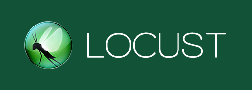
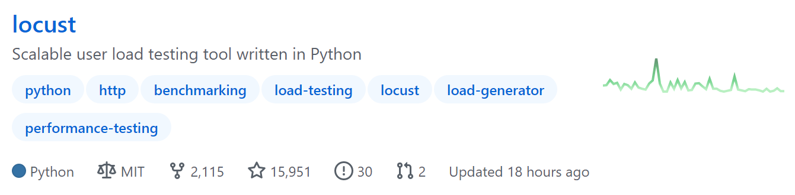
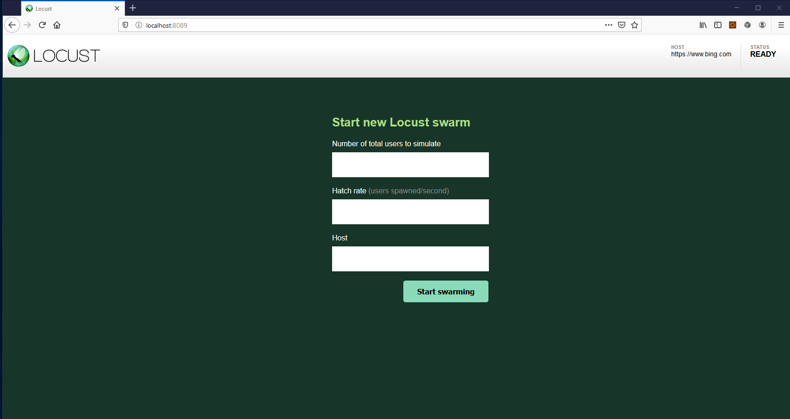
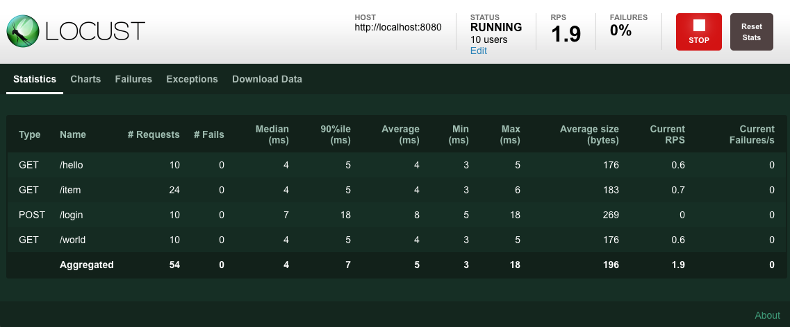
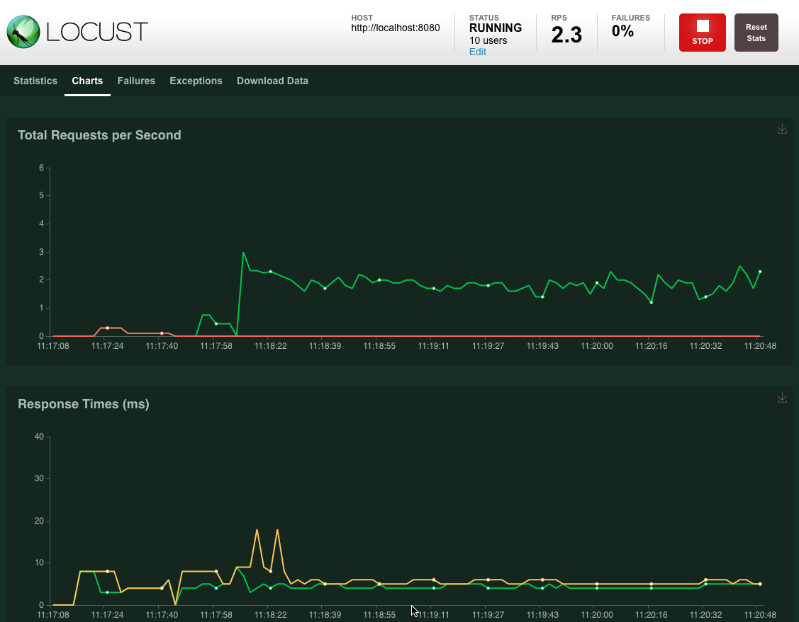

本书作者：测试开发刚哥，文章版权归个人所有，未经授权请勿转载。
Locust 是一款 Python 技术栈的开源的性能测试工具。Locust 直译为蝗虫，寓意着它能产生蝗虫般成千上万的并发用户：

Locust 并不小众，从它 Github 的 Star 数量就可见一斑：

截止文章写作时，一共15951Star。
Locust 生态良好，它已在多家外企（包括世界 500 强）投入使用：
如此看来，Locust 是非常值得学习和掌握的一款工具。
Python 的魔力在于化繁为简，基于 Python 的 Locust 也能给仍然困惑于性能测试的我们带来启发。
Locust 特点
- 以纯 Python 方式编写用户脚本，提供极大自由度。
- 用户脚本可以串行方式编写，Locust 会通过轻量级进程/协程产生并发，无需自己做并发编程。
- 并发量大，借助于 gevent 库，Locust 能产生成千上万并发请求。
- 开销小，Locust 用户运行时开销很小。
- 良好的 Web UI 对性能结果实时监测。
- 能测任何系统任何协议，只需要写个 client 即可。
- 开放 REST API，尽情发挥。
安装 Locust
需要 Python 版本3.6及以上。
执行 pip 命令：
$ pip install locust
验证安装成功：
$ locust -V
安装时会一并安装依赖库：
Installing collected packages: Werkzeug, pywin32, zope.event, greenlet, gevent, geventhttpclient, itsdangerous, flask, Flask-BasicAuth, ConfigArgParse, pyzmq, psutil, locust
能看出来 flask 为 Locust 提供了 Web 功能。
快速上手
使用 Locust 一般按照以下步骤进行：
- 编写 Python 用户脚本。
- 使用
locust命令执行性能测试。 - （可选）通过 Web 界面监测结果。
示例代码如下，新建 locustfile.py 文件：
import time
from locust import HttpUser, task, between
class QuickstartUser(HttpUser):
wait_time = between(1, 2.5)
@task
def hello_world(self):
self.client.get("/hello")
self.client.get("/world")
@task(3)
def view_items(self):
for item_id in range(10):
self.client.get(f"/item?id={item_id}", name="/item")
time.sleep(1)
def on_start(self):
self.client.post("/login", json={"username":"foo", "password":"bar"})
路径切换到 locustfile.py 文件所在目录，执行命令：
$ locust
也可以通过
-f指定某个目录文件：$ locust -f locust_files/my_locust_file.py
运行后，打开http://127.0.0.1:8089看到 Web 界面：

填写信息后，就能开始压测了。Web 界面提供了结果统计数据：

和性能指标走势图：

脚本解析
示例脚本解析如下：
## Locust用户脚本就是Python模块
import time
from locust import HttpUser, task, between
## 类继承自HttpUser
class QuickstartUser(HttpUser):
# 每个模拟用户等待1~2.5秒
wait_time = between(1, 2.5)
# 被@task装饰的才会并发执行
@task
def hello_world(self):
# client属性是HttpSession实例，用来发送HTTP请求
self.client.get("/hello")
self.client.get("/world")
# 每个类只会有一个task被选中执行
# 3代表weight权重
# 权重越大越容易被选中执行
# view_items比hello_wolrd多3倍概率被选中执行
@task(3)
def view_items(self):
for item_id in range(10):
# name参数作用是把统计结果按同一名称进行分组
# 这里防止URL参数不同会产生10个不同记录不便于观察
# 把10个汇总成1个"/item"记录
self.client.get(f"/item?id={item_id}", name="/item")
time.sleep(1)
# 每个模拟用户开始运行时都会执行
def on_start(self):
self.client.post("/login", json={"username":"foo", "password":"bar"})
小结
本文先了解了 Locust 的背景和生态，它是值得学习的，对于 Python 技术栈来说更加如此。接着介绍了使用 pip 命令安装 Locust，其中发现顺带安装了 flask，Locust 的 Web 功能是 flask 提供的。然后给出了一段示例代码，按照步骤上手 Locust。最后对示例代码进行了解析，浅尝辄止。locustfile 实际上该怎么写呢？
参考资料：